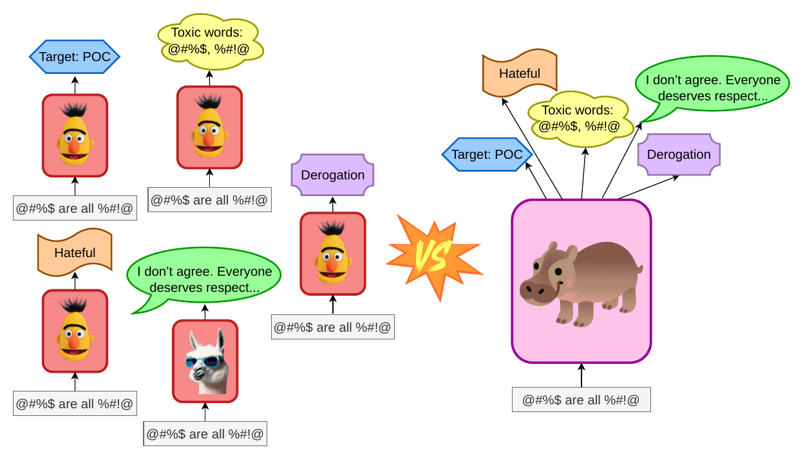
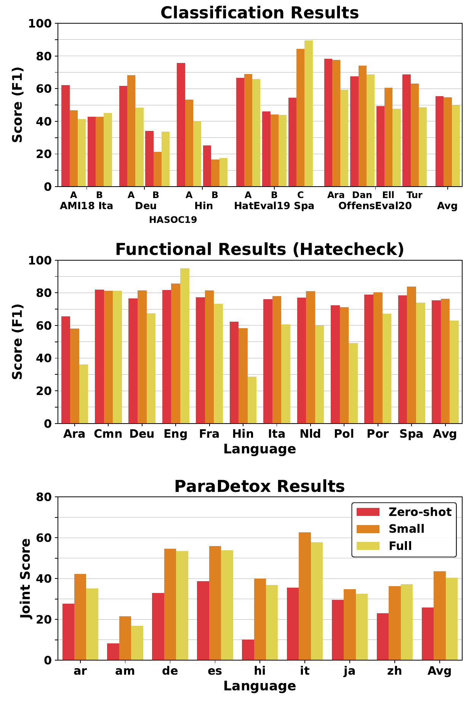
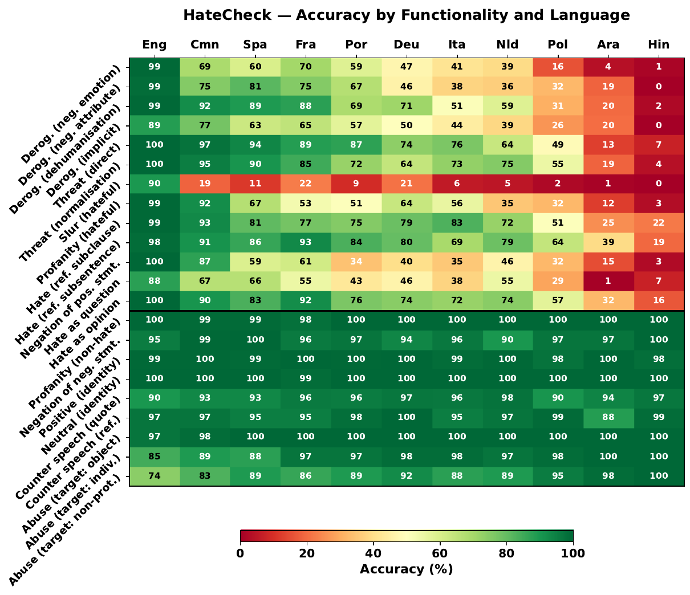

1School of Computation, Information and Technology, TU Munich · 2Munich Center for Machine Learning · 3Munich Data Science Institute
lukas.edman@tum.de • daryna.dementieva@tum.de
The idea
Hate speech research has produced dozens of datasets and just as many narrow, task-specific classifiers — typically BERT-style encoders trained one dataset at a time. We ask a simpler question: what if, instead, we unify 36 of these datasets into one instruction-formatted corpus and fine-tune a single generalist LLM on all of them at once?
The result is HIPPO — Harmful Input, Positive and Productive Output — an instruction-tuned model based on Qwen3-4B-Instruct-2507. Despite being a fraction of the size of many competing systems (some baselines reach 62B–671B parameters), HIPPO matches or beats task-specific state-of-the-art on the majority of evaluated tasks, and generalizes far better to unseen domains, label schemes, and languages than encoder-based specialists typically do.

How does an instruction-tuned generalist compare to strong task-specific baselines for English hate speech tasks?
Does instruction tuning outperform zero-/few-shot prompting of the same base LLM?
Can the tuned model generalize to previously unseen hate speech domains and label schemes?
Can English-only instruction tuning support cross-lingual generalization?
Abstract
Large language models (LLMs) demonstrate impressive performance across a wide range of general NLP tasks; however, their effectiveness in sensitive domains, such as hate speech detection, remains less clear. Prior studies comparing prompted LLMs with state-of-the-art encoder-based models (e.g., BERT variants) have shown only marginal gains, suggesting that LLMs may not excel in hate speech detection or mitigation. In this work, we revisit this question through the lens of instruction tuning. By thoroughly unifying 36 English hate speech datasets spanning multiple labeling schemes, we fine-tune a generalist LLM, based on Qwen3, specifically for hate speech mitigation. Our results demonstrate not only state-of-the-art performance on in-domain benchmarks but also substantial improvements in cross-domain and cross-lingual generalization—areas where encoder-based specialist classifiers often struggle.
Method
We source 36 English hate-speech and toxicity datasets spanning four task families — binary, multiclass, multilabel, and open-ended generation — and convert every one of them into a shared conversational instruction format before deduplicating and fine-tuning on the result.
Binary (hateful / not), multiclass (e.g. target group), multilabel, and generative tasks (counter-narrative dialogue, text detoxification, toxic span extraction) — sourced from Twitter/X, Reddit, Gab, Facebook, YouTube, Civil Comments, Wikipedia, and more.
Each example becomes a user/assistant exchange. Hierarchical datasets (e.g. hateful → target → severity) are unrolled into multi-turn conversations; classes are referred to by letter (A, B, C…) rather than name, which the authors find substantially boosts performance.
User: You are an expert on hate speech, and you are tasked with answering questions about the following text. Respond only with the answer, no other text: {text}
Should the text be classified as {category}? Answer with 'yes' or 'no'.
Assistant: {yes / no}
Datasets scraped from the same platforms create overlapping examples. After removing text/label duplicates and resolving cross-dataset label conflicts, the corpus shrinks by 3.73% to a final 649,761 training examples across 61 (sub)tasks.
The base model is Qwen3-4B-Instruct-2507, fine-tuned with QLoRA on assistant-token loss only. The main HIPPO model uses 4B parameters to keep compute modest (~1 day on one H100); 0.6B and 32B variants are trained to study scaling (~10 hours and ~4 days respectively).
Results
All scores are macro-F1 (see paper for task-specific exceptions: ToxicSpans uses character-level span-overlap F1, Jigsaw averages per-label F1, ParaDetox uses a joint style-transfer/content/fluency score). shaded cells beat the state-of-the-art reference; bold marks the best score in the row.
tasks where the single unified HIPPO model beats training a separate model per dataset.
tasks where a 4B HIPPO beats the best published, often much larger task-specific system (up to 671B parameters).
vs. 68.0 (individually-trained models), 55.3 (GPT-5-mini), and 68.5 (literature best) — at just 4B parameters.
| Dataset | Type | HIPPO | Indiv. | GPT-5-mini | Best (lit.) | Best Arch. | Source |
|---|
Effectiveness of instruction tuning across model scale, compared to the literature state-of-the-art. Shaded cells outperform the SOTA; the 32B model wins outright on 11 of 17 tasks.
| Dataset | 0.6B | 4B | 32B | Best (lit.) |
|---|
Zero-shot prompting of the base model vs. leave-one-out (LOO — trained on the other 35 datasets, tested on the held-out one) vs. the fully unified HIPPO. LOO isolates true cross-task generalization: of 17 held-out tasks, 11 improve over zero-shot purely from training on other hate-speech tasks.
| Dataset | Zero-shot | Leave-one-out | Full HIPPO |
|---|
RQ4
HIPPO is trained exclusively on English data. Since its Qwen3 backbone is pretrained multilingually, the paper asks whether instruction tuning damages or helps non-English hate speech processing — testing zero-shot, a minimally-tuned (1k examples/dataset) and the fully-tuned model across classification, generation, and functional (HateCheck) tasks in 11 languages.


Data
All 36 datasets are unified for training (after deduplication: 649,761 examples, 61 subtasks). Nine of them — chosen for having a clean, reproducible train/test split — are held out as the evaluation superset spanning all four task categories.
| Dataset | Attribution | Train | Test | Domain | Label type | Subtasks |
|---|---|---|---|---|---|---|
| AMI18 | Fersini et al. (2018) | 3,998 | 1,000 | Hierarchical | 3 | |
| EDOS | Kirk et al. (2023) | 13,998 | 2,000 | Reddit, Gab | Hierarchical | 3 |
| HASOC19 | Mandl et al. (2019) | 5,817 | 1,153 | Twitter, Facebook | Hierarchical | 3 |
| HatEval19 | Basile et al. (2019) | 8,992 | 2,971 | Hierarchical | 3 | |
| HateXplain | Mathew et al. (2021) | 15,348 | 1,924 | Twitter, Gab | Hierarchical | 3 |
| Jigsaw | Cjadams et al. (2017) | 159,529 | 63,978 | Civil Comments | Multilabel | 1 |
| OffensEval20 | Zampieri et al. (2019) | 13,187 | 5,309 | Hierarchical | 3 | |
| ParaDetox | Logacheva et al. (2022) | 11,927 | 600 | Twitter, Reddit, CC | Generation | 1 |
| ToxicSpans | Pavlopoulos et al. (2022; 2021) | 7,931 | 2,000 | Civil Comments | Generation | 1 |
| All 36 datasets, total | 649,761 | 80,935 | 61 |
Full per-dataset licenses and instruction templates are listed in the paper's appendices.
Responsible use
Code and model weights are released under the OpenRAIL‑S license, which restricts use of the models to responsible, socially beneficial applications.
HIPPO is intended to support content moderation, not to replace it: its outputs are meant as a recommendation to human moderators and platform-safety pipelines, not a final, unappealable decision. The authors emphasize that effective moderation requires sustained, community-centered research, and that moderation policy should remain a human decision informed by social context.
Citation
@inproceedings{edman2026hippo,
title = {From Specialization to Generalization: Instruction-tuned {LLM}s for Robust Harmful Content Mitigation},
author = {Edman, Lukas and Dementieva, Daryna and Fraser, Alexander},
booktitle = {Proceedings of the 2026 Conference on Empirical Methods in Natural Language Processing},
month = oct,
year = {2026},
address = {Budapest, Hungary},
publisher = {Association for Computational Linguistics},
url = {https://arxiv.org/abs/2608.25605}
}
Preliminary citation based on the arXiv preprint — page numbers and the official ACL Anthology entry will be added once camera-ready proceedings are published.